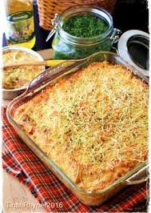
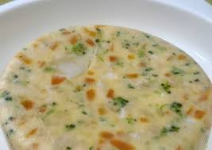
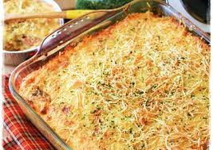
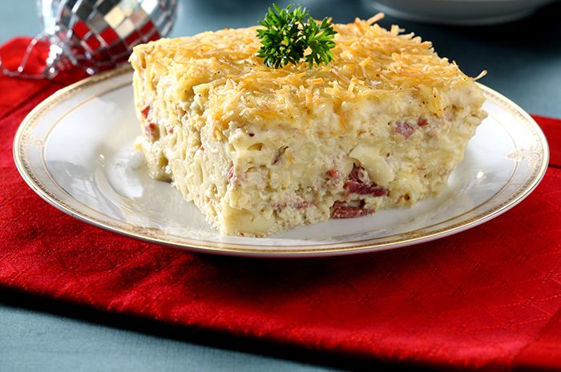

Resep Skotel

Bahan-bahan:
- 1/4 macaroni
- 2 butir telor ayam
- 1 sachet kornet
- 3 buah sosis sapi farmhouse potong dadu
- 1 bungkus soup cream ayam
- 1 sachet susu bubuk
- Oregano, gula, garam, lada, keju secukupnya
Langkah-langkah:
- Masak cream sup sesuai petunjuk, hingga mengental, angkat tambahkan
telor yang sudah dikocok, susu bubuk, oregano,gula, garam, lada bubuk sesuai selera

- Tata macatoni di alumunium foil, lalu siram dengan cream soup, taburi atasnya
dengan parutan keju.

- Panggang hingga matang. Angkat dan sajikan
